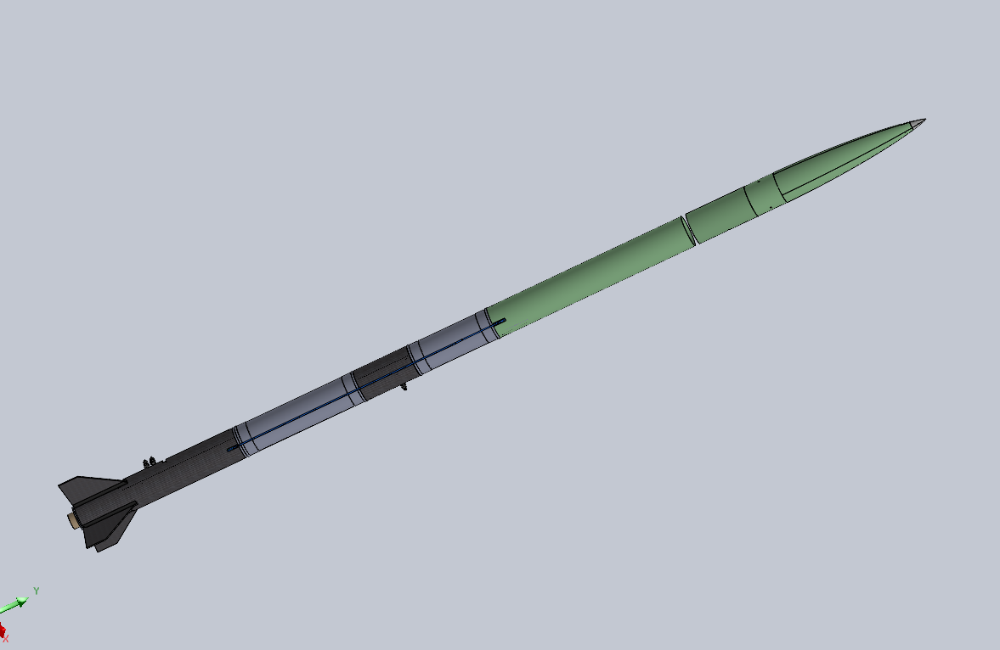

SARP / OVERVIEW
Full Rocket Assembly
Systems Integration
The Spaceport America Cup Rocketry Project brings together propulsion, avionics, structures, recovery, and manufacturing into a single launch vehicle. A subassembly of the current vehicle is scheduled to fly at FAR Out next year.
My work within Structures Integration spans both design and hands-on manufacturing — understanding how individual structural components work together to transfer loads through the vehicle, then physically building it. I performed carbon fiber layup on the fin can, airframe sections, and fins, contributed to spar manufacturing, and hand-finished composite surfaces through sanding and prep work.